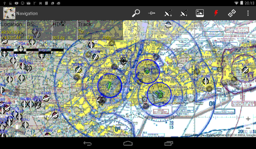

What is New
version 1.0.0.3

- All AAF
map types as overlay
- Worldwide
airspaces overlay
- Different
weather overlays
- Clouds
- Perticipation
- Winds
- Isobars
Push the Layers button to toggle the visibility of the overlays selection
window.
GOOGLE
MAPS:
To select the base google maps chart.
AAF-US MAPS:
Enable the aaf maps overlay and select from the different available
maps.
AIRSPACES:
To enable the airspace overlay
WEATHER:
Select from the different weather overlays
The AAF-US MAPS and the AIRSPACES are cached on your tablet for a
period of 14 days. After selecting a map overlay it can take up to 10
seconds for it the appear because of the download times necessary. Your
selections are stored and loaded when the app is started again.